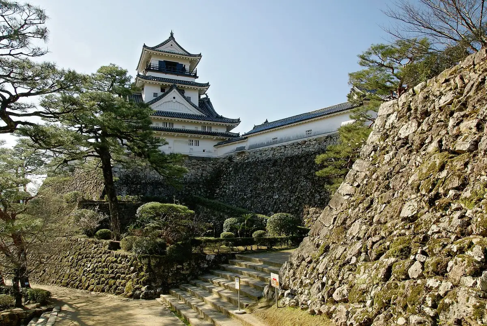
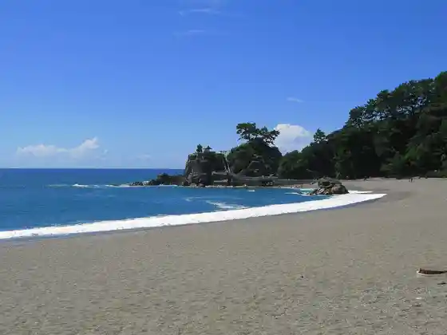
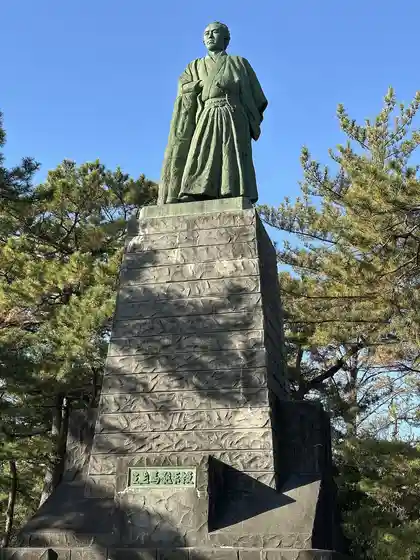
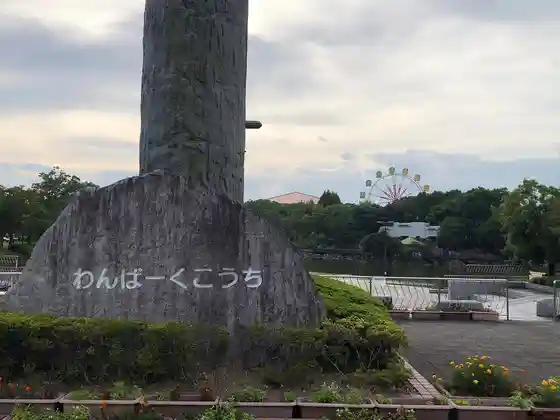

Kochi
Kochi · Kochi
Kochi
Highlighted on the Kochi map.

Stay
Kochi Pashifikku Hotel
Apa Hotel (Kochi)
Uerukamu Hotel Kochi
Oriento Hotel Kochi
Konfoto Hotel Kochi
Sausuburiizu Hotel Kochi Kurage
Supa Hotel Kochi
Sebundeizu Hotel
Sebundeizu Hotel Purasu
Tsurisutoin Kochi
Domiiin Kochi
Buraito Park Hotel
Puchi Hotel Kochi
Hotel Fasuto
Hotel Minato Ya
Hotel Abesuto Kochi
Hotel Eriawan Kochi
Hotel Besutopuraisu Kochi
Hotel Tosa Michi Takasu
Hotel No.1 Kochi
Ritchimondo Hotel Kochi
Ribasaido Hotel Shoei
San Sui Sono
Tosa Gyoen
Josai Kan
Tennen Onsen Haru no Baths
Nishitetsu In Kochi Harimaya Hashi
Kochi Sanraizu Hotel
Kochi Hotel
ANA Kuraun Plaza Hotel Kochi
JR Kurementoin Kochi
Dining
Ra Purima Voruta
Masato
IHARA
Donko
Annata
Kokkudoru
Umasushi
Yu Ki Ya
Kokuson
Za Ya
Kane Haru
Yatai Yasube
Imadoki Yasube
Kamon Tei
Tosa Akaushito Wain Putei Veru
Sugoroku
Experience
Hirome Market
Hirome Market, Kochi
Sights
Kochi Shiro
Kochi Castle keep, Kochi City
Katsurahama
Katsurahama beach, Kochi

Sakamoto Ryoma Zo
Statue of Sakamoto Ryoma at Katsurahama

Nichiyo City
Kochi Sunday Market
Wanpakukochi Animaru Land
Wanpark Kochi Animal Land main gate

Go Dai Yama
Mount Godai, Kochi
Kochi Prefectural Makino Botanical Garden
Kochi Prefectural Makino Botanical Garden
Chikurin Tera
Chikurin-ji Temple on Mount Godai